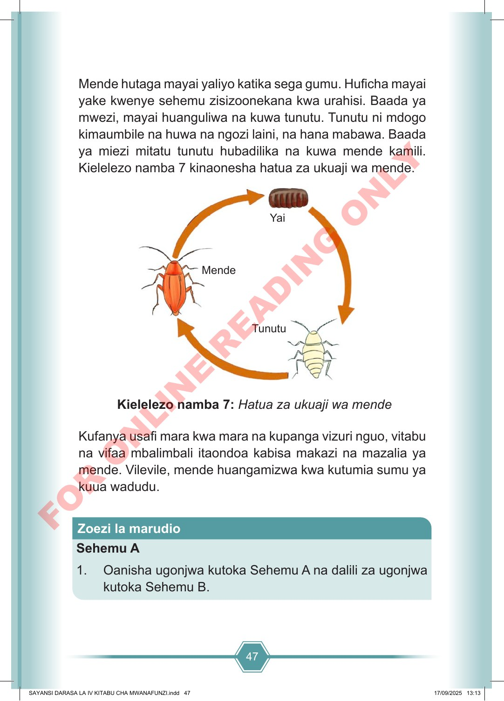

47 Mende hutaga mayai yaliyo katika sega gumu. Huficha mayai yake kwenye sehemu zisizoonekana kwa urahisi. Baada ya mwezi, mayai huanguliwa na kuwa tunutu. Tunutu ni mdogo kimaumbile na huwa na ngozi laini, na hana mabawa. Baada ya miezi mitatu tunutu hubadilika na kuwa mende kamili. Kielelezo namba 7 kinaonesha hatua za ukuaji wa mende. Kielelezo namba 7: Hatua za ukuaji wa mende Kufanya usafi mara kwa mara na kupanga vizuri nguo, vitabu na vifaa mbalimbali itaondoa kabisa makazi na mazalia ya mende. Vilevile, mende huangamizwa kwa kutumia sumu ya kuua wadudu. Sehemu A 1. Oanisha ugonjwa kutoka Sehemu A na dalili za ugonjwa kutoka Sehemu B. Zoezi la marudio Mende Yai Tunutu SAYANSI DARASA LA IV KITABU CHA MWANAFUNZI.indd 47 SAYANSI DARASA LA IV KITABU CHA MWANAFUNZI.indd 47 17/09/2025 13:13 17/09/2025 13:13 F O R O N L I N E R E A D I N G O N L Y